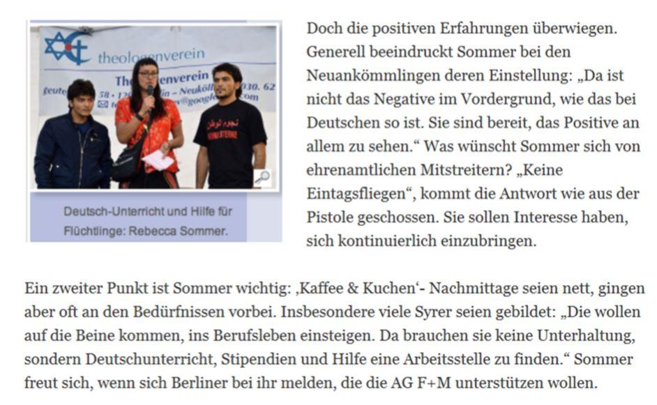
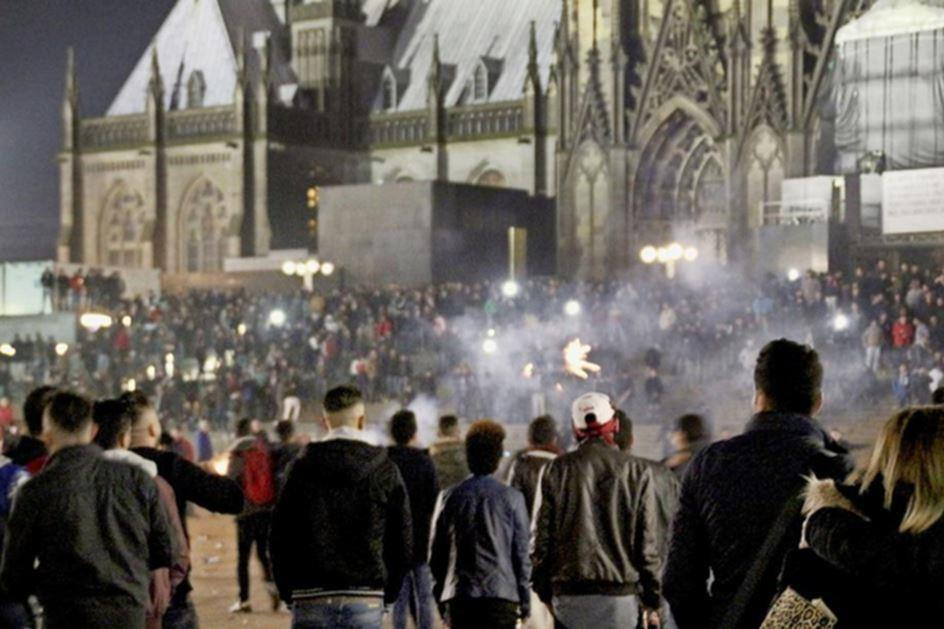

Le réveil de Rebecca Sommer, activiste allemande pro-réfugiés : « Pour l’Allemagne, c’est déjà trop tard »
par Olivier BAULT
Rebecca Sommer a fondé en 2012 l’association d’aide aux réfugiés Arbeitsgruppe Flucht + Menschen-Rechte (AG F+M). A la fin de l’été 2015, cette artiste, photographe et journaliste auteur de documentaires applaudissait la décision d’Angela Merkel d’ouvrir en grand les frontières de l’Allemagne aux « réfugiés » bloqués en Hongrie, malgré l’effet de pompe aspirante que cela devait créer. « A ce moment-là, je voulais aider chaque personne et je croyais vraiment que tous ces gens fuyaient un enfer et se trouvaient dans la détresse la plus absolue », a expliqué l’activiste allemande dans une interview publiée par l’hebdomadaire conservateur polonais Do Rzeczy le 15 janvier dernier à qui elle a parlé de son réveil face à la réalité.
En 2015, son ONG comptait près de 300 bénévoles qui donnaient des cours d’allemand aux nouveaux arrivants. Si elle dit aujourd’hui n’avoir jamais été en faveur d’une immigration illimitée, avant sa prise de conscience la militante des droits de l’homme Rebecca Sommer n’en était pas moins très attirée par l’apport multiculturel de cette immigration de masse, comme le montre cet article publié en décembre 2015 par un journal berlinois et repris sur le site de l’ONG AG F+M.

LES AGRESSIONS SEXUELLES DE COLOGNE ONT MARQUÉ LE DÉBUT DU RÉVEIL DES BÉNÉVOLES
La prise de conscience de cette représentante typique des activistes droits-de-l’hommistes bien ancrés à gauche date de la Saint-Sylvestre 2015 à Cologne. Elle a bien dû reconnaître à ce moment-là, ainsi qu’elle l’avoue sans détour au site anti-islamisation polonais euroislam.pl, que les comportements des agresseurs nord-africains et moyen-orientaux de Cologne s’inscrivaient tout à fait dans la culture musulmane des nouveaux arrivants qu’elle avait elle-même rencontrés jusqu’ici : « C’est le moment où je me suis dit : “Rebecca, tu dois maintenant mettre le holà, ne serait-ce qu’en tant que militante pour les droits des femmes.” »
Auparavant, se justifie Rebecca Sommer, « Je croyais que [leur] vision moyenâgeuse allait changer avec le temps […] mais après avoir vu ces situations se répéter et avoir observé ce qui se passait autour de moi, bénévole, j’ai dû reconnaître que pour ce qui est des réfugiés musulmans, ils ont grandi avec des valeurs totalement différentes, ils ont subi un lavage de cerveau depuis l’enfance et sont endoctrinés par l’islam et n’ont absolument pas l’intention d’adopter nos valeurs. Pire encore, ils nous regardent, nous les infidèles, avec dédain et arrogance. »
DES RÉFUGIÉS « ARROGANTS » SELON REBECCA SOMMER
Dans son interview pour le site euroislam.pl, l’activiste pro-réfugiés précise que le mépris pour les modes de vie occidentaux et pour les femmes ne concerne pas que les musulmans pratiquants, mais la majorité de ceux qui ont grandi au sein de la culture musulmane. Elle parle aussi de sa grande déception quand elle s’est aperçue comment un groupe de « réfugiés » qu’elle avait personnellement aidés et qu’elle croyait être ses amis pratiquaient avec elle la taqqiya. « Je me suis brutalement aperçue que ces gens que j’avais aidés, qui mangeaient, buvaient, dansaient et riaient avec moi, qui ne priaient pas, qui n’allaient pas à la mosquée, qui ne respectaient pas le ramadan, qui se moquaient de la religion et des personnes profondément religieuses, ne m’appelaient pas autrement que « la stupide putain allemande » quand ils mangeaient ma nourriture et se reposaient dans mon jardin. » Elle reconnaît toutefois qu’elle avait été prévenue par des Arabes et des Kurdes arrivés eux aussi récemment en Allemagne justement pour fuir l’oppression musulmane.
Rebecca Sommer affirme ne pas être un cas isolé, que de nombreux autres bénévoles ont aussi eu cette même prise de conscience tardive et qu’il y a beaucoup moins de bénévoles prêts à travailler avec les nouveaux arrivants aujourd’hui en Allemagne.
Elle reconnaît aussi que, par leur nombre, ces immigrants musulmans sont une menace pour le mode de vie des Allemands, et que cela va empirer avec le regroupement familial.
L’ACTIVISTE REBECCA SOMMER CONNAÎT PERSONNELLEMENT DES PERSONNES QUI S’APPRÊTENT À ÉMIGRER D’ALLEMAGNE VERS LA POLOGNE POUR FUIR L’INSÉCURITÉ
Elle a d’ailleurs confié à l’hebdomadaire polonais Do Rzeczy connaître personnellement des Allemands qui s’apprêtent à émigrer en Pologne parce qu’ils en ont assez, et elle a ajouté : « Si la Pologne et la Hongrie ne cèdent pas sur cette question, vous pouvez devenir des pays vers lesquels s’enfuiront certains Allemands et Français. Vous pouvez devenir des îlots de stabilité en Europe. »
Des îlots de stabilité mais aussi de démocratie, car Rebecca Sommer constate aussi que la démocratie n’existe plus vraiment en Allemagne. Son réveil sur ce plan date également de l’épisode de Cologne, quand les médias n’ont pas pris la défense de la société allemande mais sont au contraire devenus partie intégrante d’un système malade, et quand la police, sous la pression des dirigeants politiques, a cessé d’informer les citoyens. Et la nouvelle loi allemande qui oblige les réseaux sociaux à bloquer les contenus prétendument haineux a accentué la censure. C’est ainsi que, quand la militante des droits de l’homme a voulu dénoncer des conversions forcées à l’islam en Indonésie, son compte a été bloqué. Ce n’est d’ailleurs sans doute pas un hasard si c’est à des médias polonais qu’elle se confie aujourd’hui, car quel média allemand accepterait-il de publier de tels propos ?
LE RÉVEIL D’UNE GAUCHISTE PRO-RÉFUGIÉS FACE À L’ISLAM
Le problème, pour Rebecca Sommer, c’est aussi que les Allemands ne cherchent pas du tout à imposer leurs propres normes aux nouveaux arrivants. « Nous avons un énorme problème avec la gauche et les Verts » pour qui « il n’y a pas de culture allemande ». Cette Berlinoise n’ose plus sortir seule pour la Saint-Sylvestre et elle a déjà été agressée cinq fois par des hommes parlant l’arabe !
Elle pense que pour l’Allemagne, c’est déjà trop tard, et elle compte émigrer pour sa retraite. L’islam politique est déjà présent partout, y compris au gouvernement, dans les partis politiques, dans la police et dans les écoles, et avec le regroupement familial des millions d’immigrants musulmans supplémentaires vont venir. Dans la capitale allemande où elle réside, des quartiers entiers sont déjà dominés par la communauté musulmane qui forme une société parallèle.
« Tous ceux qui vivent à Berlin et s’occupent des immigrants voient ce problème. La seule exception, ce sont ceux qui ne veulent tout simplement pas le voir parce qu’ils sont adeptes d’une idéologie et sont aveugles et sourds à la réalité », conclut Rebecca Sommer dans son entretien avec Do Rzeczy.
O.B.
Article présenté par l’auteur avec l’autorisation du site de ré information : http://reinformation.tv
Partager cette page